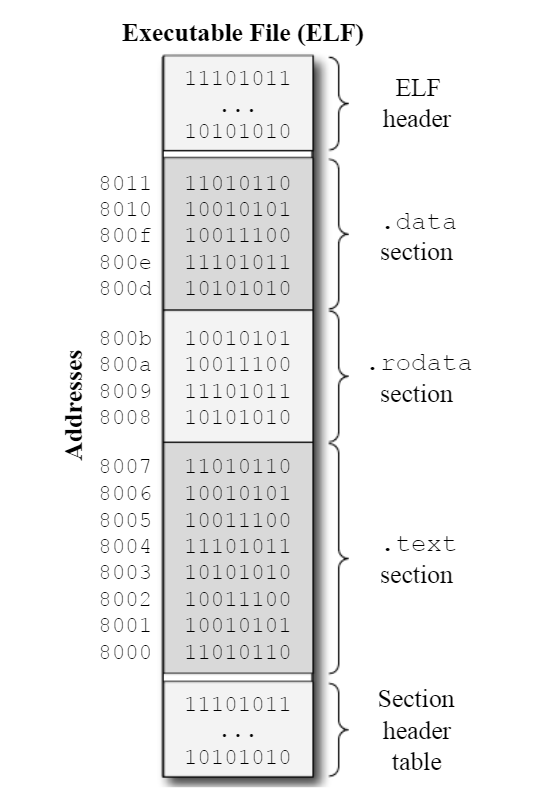

RISC-V Unprivileged ISA¶
约 4862 个字 129 行代码 预计阅读时间 18 分钟
1 Basic¶
Registers Convents¶
| 寄存器 | ABI 名称 | 用途描述 | caller-saved | callee-saved |
|---|---|---|---|---|
x0 |
zero |
硬件 0 | ||
x1 |
ra |
返回地址（return address） | yes | |
x2 |
sp |
栈指针（stack pointer） | yes | |
x3 |
gp |
全局指针（global pointer） | ||
x4 |
tp |
线程指针（thread pointer） | ||
x5 |
t0 |
临时变量/备用链接寄存器（alternate link reg） | yes | |
x6-7 |
t1-t2 |
临时变量 | yes | |
x8 |
s0/fp |
需要保存的寄存器/帧指针（frame pointer） | yes | |
x9 |
s1 |
需要保存的寄存器 | yes | |
x10-11 |
a0-a1 |
函数参数/返回值 | yes | |
x12-17 |
a2-a7 |
函数参数 | yes | |
x18-27 |
s2-s11 |
需要保存的寄存器 | yes | |
x28-31 |
t3-t6 |
临时变量 | yes | |
pc |
pc |
程序计数器（program counter） |
Caller-Saved：调用者保存寄存器，也被称为可变寄存器/Volatile Registers，被调用者可以自由地改变这些寄存器的值，如果调用者需要这些寄存器的值，就必须在执行程序调用之前保存这些值。t0-t6（临时寄存器）、a0-a7（返回地址与函数参数）与 ra（返回地址）都是调用者保存寄存器。
Callee-Saved：被调用者保存寄存器，这些寄存器的值在过程调用之前和之后必须保持不变，被调用者如果要使用这些寄存器，就必须在返回之前保存这些值。这就意味着要保存原来的值，正常使用寄存器，恢复原来的值。s0-s11（被保存的寄存器）和 sp（栈指针）都是被调用者保存寄存器。
全局指针 gp 和线程指针 tp 很特殊，先不考虑。
Instruction and its Formats¶
RV32I 有 4 种基础的指令格式（R/I/S/U），再根据立即数解码的不同又分出两种（B/J），总共六种指令格式
-
R 型指令
31 25 24 20 19 15 14 12 11 7 6 0 funct7 rs2 rs1 funct3 rd opcode 使用寄存器进行数字逻辑运算的指令格式，运算由
opcode funct3 funct7决定，rd = rs1 op rs2（shift类例外，它们用rs2位置表示移位数的立即数）。 -
I 型指令
31 20 19 15 14 12 11 7 6 0 imm[11:0] rs1 funct3 rd opcode 使用寄存器和立即数进行数字逻辑运算，以及
load类指令等的指令格式，运算类型等由opcode funct3决定，如果是 ALU 运算，则rd = rs1 op imm。立即数是
{{20{inst[31]}}, inst[31:20]}，也就是对imm[11:0]进行符号位扩展到 32 位。 -
S 型指令
31 25 24 20 19 15 14 12 11 7 6 0 imm[11:5] rs2 rs1 funct3 imm[4:0] opcode store类指令，store的大小由funct3决定，以变址模式进行寻址，即rs1 = [rs2+imm]。立即数是
{{20{inst[31]}}, inst[31:25], inst[11:7]}。 -
B 型指令
31 25 24 20 19 15 14 12 11 7 6 0 imm[12,10:5] rs2 rs1 funct3 imm[4:1,11] opcode 由 S 型指令分来，与之区别是立即数读取顺序不同，是所有分支类指令。是否分支由
funct3 rs1 rs2决定。立即数是
{{19{inst[31]}}, inst[31], inst[7], inst[30:25], inst[11:8], 1'b0}。 -
U 型指令
31 12 11 7 6 0 imm[31:12] rd opcode LUI和AUIPC，立即数都是在高 20 位，而且没有源操作数。立即数是
{inst[31:12], 12'b0}。 -
J 型指令
31 12 11 7 6 0 imm[20,10:1,11,19:12] rd opcode 由 U 型指令分来，区别也是立即数读取不同，仅有
JAL一个指令。立即数是
{{11{inst[31]}}, inst[31], inst[19:12], inst[20], inst[30:21], 1'b0}。
Immediate Values¶
与正常无异，十六进制数前加 0x，二进制数前加 0b，十进制数直接写或者在前面加 0。用单引号括起来的字母数字字符/Alphanumeric Characters 会根据 ASCII 表转化为相应的数值，比如 'a' 会转化为 97。
Symbol Names and Labels¶
符号是和数值联系在一起的名字，标签会自动地转化为符号，我们也可以使用 .set 指令显式地声明一个符号。符号名可以包含数字、字母与下划线，但是不能以数字开头。符号名是大小写敏感的。在下面的程序中，我们就定义了一个符号 max_temp，并且将其值设置为 100。
标签是表示程序位置的一个记号，可以被汇编指令（Instructions and Directives）引用并且在汇编与链接过程之中翻译为地址。GNU 汇编器一般会接受两种类型的标签：符号标签/Symbolic Labels 和数字标签/Numeric Labels。符号标签以符号存储在符号表中，一般用来表示全局变量与某个过程，使用标识符加上冒号 name: 来定义，标识符的命名与符号的命名一样。
数字标签通过单独一位数字加上冒号来定义，一般用于局部的引用，并且也不会存储在可执行文件的符号表之中。数字标签可以在同一个汇编程序之中重复定义，但是符号标签不能。
对数字标签的引用需要加上后缀 b 或 f来表明是引用前边定义的标签 b 还是后边定义的标签 f。下面是对标签的一个例子：
Location Counter and Assembling Process¶
Assembly Directives¶
汇编指令（Directives）用来控制汇编器，比如 .section .data 就是用来告诉汇编器接下来的指令将放到 .data 节之中；.word 10 则告诉汇编器分配一个 32 位的值并且将其放到当前节之中。
一般的汇编指令被编码成一个字符串，包含着指令名与指令参数。在 GNU 汇编器上，汇编名以一个点 . 作为前缀，比如 .section，.word，.globl 等等。
下面是一些最常用的汇编指令：
- 向程序中添加值的指令：
.dword arg_expr [, arg_expr]*： 添加一个或多个以逗号分隔的 64 位值到程序中；.word arg_expr [, arg_expr]*： 添加一个或多个以逗号分隔的 32 位值到程序中；.half arg_expr [, arg_expr]*： 添加一个或多个以逗号分隔的 16 位值到程序中；.byte arg_expr [, arg_expr]*： 添加一个或多个以逗号分隔的 8 位值到程序中；.string string： 添加一个以NULL结尾的字符串到程序中；.ascii string： 添加不以NULL结尾一个字符串到程序中。.asciz string：这是.string的别名；
- 切换程序节
- 向
.bss节添加值 - 向符号表添加符号
- 定义一个全局符号
- 对齐指令
2 RV32I Base Integer Instruction Set¶
Logic Instructions¶
- 逻辑指令：
and，or，xor，andi，ori，xori，均执行按位运算； - 指令格式：
lop dest, src1, src2，lopi dest, src1, imm； - 指令类型：
Shift Instructions¶
- 移位指令：
sll，srl，sra，slli，srli，srai，算数移位和逻辑移位根据a和l区分； - 指令格式：
sop dest, src1, src2，sopi dest, src1, imm； - 指令类型：
- Tip：注意一般使用小端序存储，即低位在低地址，高位在高地址。
Arithmetic Instructions with M Extension¶
Data Transfer Instructions¶
- 语法：
memop reg, off(addr) memop为指令名，reg为指令的目标/源寄存器，off为偏移量，addr为基址寄存器/Base Address。- 通过
off(addr)可以计算地址为addr + off的内存位置，按字节寻址。
Control Transfer Instructions¶
branch 类条件跳转指令：
jump 类无条件跳转指令：
注意到，我们这时候我们在这里用的是 offset 而不是 label，这就必须要说一下直接目标地址的编码了。当我们想要跳转到某个地址的时候，第一个反应都是直接在指令之中塞进去这个地址，但是在 RV32I 之中，我们使用的是 32 位的地址，而 RV32I 的指令都是 32 位编码的，所以将一个 32 位的地址塞到一个 32 位的指令中是不可能的，而对于一个经典的 beq 指令而言，除去 7 位的 opcode 与 3 位的 funct3，还有 5 位的 rs1 与 rs2 之外，我们只剩下 12 位留给 label/offset 了。
为了克服这个限制，直接目标地址其实会编码成相对于在这条指令执行时相对于程序计数器的偏移量，本质上是一个立即数，这样我们就可以用一个 12 位的偏移量来表示跳转目标的地址了，这也阻止了指令跳转到太过于远的地方，只能跳转到 ±4KiB 范围之内。
注意到我们这里用到了直接目标地址/Direct Target Address 这个词，这种情况下，目标地址会直接编码到指令之中。相对地就有间接目标地址/Indirect Target Address，这种情况下，目标地址会存储在一个寄存器或者内存之中，指令会跳转到这个地址之中，典型例子就是 jr rs1。
jal 指令其实是 Jump and Link 的缩写，表示跳转并链接，连接的是返回地址，它会将下一条指令的地址存到 rd 寄存器之中，然后跳转到 offset 之后的地址。想象一下函数调用的情景，我们跳转到函数的地址之后，根据现有寄存器的内容进行操作，然后再返回，也就是跳回来，这就需要我们提前就将返回的地址 pc + 4 存到一个规定好了的寄存器之中，下面是一个例子：
这里的 jr ra 就是返回到函数调用前下一个命令的地址——它的任务就是返回，自然也没有 link 的职责，RISC-V 只提供了 jalr 指令，所以我们看到 jr 其实是将存储链接地址的寄存器换成了硬件零寄存器 x0/zero，也就是 jalr zero, 0(ra)。
当我们不显式指定存储返回地址的寄存器时，比如 jal offset，我们就将返回地址存储在 x1/ra 之中，ret 指令就是读取 x1 之中的地址并跳转回去的。
System Calls and Breaks¶
Conditional set Instructions¶
Detecting Overflow¶
Arithmetic with Multi-Word Variables¶
Dealing with Large Immediate Values¶
Pseudo-Instructions¶
CS61C
But sometimes, for the programmer’s benefit, it’s useful to have additional instructions that aren't really implemented by the hardware but translated into real instructions.
| 伪指令 | 实际指令 | 意义 |
|---|---|---|
lla rd, offset |
auipc rd, offset[31:12]addi rd, rd, offset[11:0] |
加载局部地址 |
la rd, symbol |
PIC: auipc rd, GOT[symbol][31:12]l{w|d} rd, GOT[symbol][11:0](rd)Non-PIC: lla rd, symbol |
加载全局地址 |
| l{b|h|w} rd, symbol | auipc rd, delta[31:12] + delta[11] l{b|h|w} rd, delta[11:0](rd) |
加载全局变量 |
| s{b|h|w} rd, symbol, rt | auipc rt, delta[31:12] + delta[11] s{b|h|w} rd, delta[11:0](rt) |
保存全局变量 |
nop |
addi x0, x0, 0 |
不进行任何操作 |
li rd, imm |
addi rd, imm if \(imm \in [0, 4096]\) lui rd, (imm >> 12)addi rd, rd, (imm & 0xFFF) |
将立即数加载到 rd 中 |
mov rd, rs |
addi rd, rs, 0 |
从 rs 拷贝到 rd |
not rd, rs |
xori rd, rs, -1 | rd = ~rs 按位取反 |
| neg rd, rs | sub rd, x0, rs | rd = -rs |
| seqz rd, rs | sltiu rd, rs, 1 | set rd if rs == 0 |
| snez rd, rs | sltu rd, x0, rs | set rd if rs != 0 |
| sltz rd, rs | slt rd, rs, x0 | set rd if rs < 0 |
| sgtz rd, rs | slt rd, x0, rs | set rd if rs > 0 |
beqz rs, offset |
beq rs, x0, offset |
branch if rs == 0 |
bnez rs, offset |
bne rs, x0, offset |
branch if rs != 0 |
blez rs, offset |
bge x0, rs, offset |
branch if rs <= 0 |
bgez rs, offset |
bge rs, x0, offset |
branch if rs >= 0 |
bltz rs, offset |
blt rs, x0, offset |
branch if rs < 0 |
bgtz rs, offset |
blt x0, rs, offset |
branch if rs > 0 |
bgt rs, rt, offset |
blt rt, rs, offset |
branch if rs > rt |
ble rs, rt, offset |
bge rt, rs, offset |
branch if rs <= rt |
bgtu rs, rt, offset |
bltu rt, rs, offset |
branch if > unsigned |
bleu rs, rt, offset |
bgeu rt, rs, offset |
branch if <= unsigned |
j offset |
jal x0, offset |
无条件跳转，不存返回地址 |
jal offset |
jal x1, offset |
无条件跳转，返回地址存到 ra |
jr rs |
jalr x0, 0(rs) |
无条件跳转到 rs 位置，忽略返回地址 |
jalr rs |
jalr x1, 0(rs) |
无条件跳转到 rs 位置，存返回地址 |
ret |
jalr x0, 0(ra) |
通过返回地址 x1 返回 |
call offset |
auipc ra, offset[31 : 12]jalr ra, offset[11:0](ra) |
远调用 |
tail offset |
auipc t1, offset[31 : 12]jalr zero, offset[11:0](t1) |
忽略返回地址远调用 |
4 From Code to Program¶
Labels and Symbols¶
标签/Label 其实是表示程序某个位置的符号，一般通过 name: 来定义，并且可以插入一个汇编程序之中来表征一个位置，这样就可以被别的汇编指令引用。符号/Symbols 是与数值相联系的名字，符号表/Symbol Table 是一个将符号与其值联系起来的映射表。汇编器将标签自动地转化成符号，并且将其与其地址联系起来，还将所有的符号放到符号表之中。使用 riscv64-unknown-elf-nm 可以查看某个目标文件的符号表。
符号/Symbol 可以分为全局符号/Global Symbols 和局部符号/Local Symbols。全局符号可以使用连接器在其他的目标文件中解析未定义引用，局部符号只在当前文件之中可见，也就是不可以用来解析其他文件之中的未定义引用。
Symbols are classified as local or global symbols. Local symbols are only visible on the same file, i.e. the linker does not use them to resolve undefined references on other files. Global symbols, on the other hand, are used by the linker to resolve undefined reference on other files.
默认来讲，汇编器会将标签/Label 作为局部符号，但是可以通过 .globl 指令来声明全局符号。程序的入口和出口都需要定义全局符号，比如：
Basic Routine¶
对于一个典型的 C 程序，程序的源代码经过编译器与连接器等工具处理、打包成一个包含了数据等信息与指令的可执行文件，载入进内存之后，操作系统再执行它。精确地讲，一个 .c 程序经过编译器得到一个 .s 的汇编程序，然后通过汇编器得到一个机器语言模块目标文件 .o，与别的库文件如 lib.o 一起通过连接器得到一个可执行文件。
编译过程可以分解为下面的步骤：词法分析/Lexical Analysis，语法分析/Syntax Analysis，语义分析/Semantic Analysis，中间代码生成/Intermediate Representation Code Generation，中间代码优化/Intermediate Representation Code Optimization，目标代码生成/Object Code Generation，目标代码优化/Object Code Optimization 这几步。
中间代码生成这一步允许我们将整个编译过程模块化，对于很多不同的语言，比如 C，C++，Rust，我们可以生成同一种中间语言 IRC，然后再将 IRC 转化为不同的机器码。不仅如此，IRC 的存在还显著降低编译优化的难度。
汇编器不仅仅只做将汇编代码转换成机器码的工作，还会将不在指令集架构之中的伪指令转换成真实的指令，进而生成 ELF/Extensible Linking Format 格式的目标文件。ELF 文件是可执行文件，目标文件，共享库与核心转储文件/Core Dump 的标准格式。目标文件主要有三种：可重定位文件/Relocatable File，可执行文件/Executable File 与共享目标文件/Shared Object File。
可重定位文件存储着二进制代码与数据，适合与别的目标文件链接并生成一个可执行文件或者共享目标文件。可执行文件包含了二进制代码与数据，告诉操作系统如何加载程序，初始化程序的内存与状态并且进行执行，在执行可执行文件的时候，shell 调用操作系统中一个称为加载器/loader 的函数，将可执行文件中的代码与数据复制到内存之中，然后将控制转移到这个程序的开头。共享目标文件主要面对链接，连接器处理共享目标文件与其他的可重定位文件或者共享目标文件来生成另一个目标文件，动态连接器将功效目标文件与可执行文件结合，创建进程映像。
从上到下，ELF 文件由 ELF 头，程序头表，数据（节或者段）与节头表组成。ELF 头包含了文件的基本信息，节头表是一个节头数组，每一个节头记录了对应的的节的信息，比如节的名字、大小、在文件的偏移与读写权限等，连接器与装载器都是通过节头表来定位和访问节的属性，我们使用 readelf 工具来查看节头表。程序头表描述了系统如何创建一个程序的进程映像，每一个表项都定义了一个段/Segment，并且引用了节。
可以清晰的得出，可重定位文件必须要有节头表，但是程序头表并不必须，可执行文件必须要有程序头表，但是节头表并不必须。汇编器生成的就是
Program Entry Point¶
每一个可执行文件都有一个包含了程序的信息的文件头，其中的一个字段就存储了程序的入口地址/Entry Point Address。一旦操作系统将整个程序加载进主存，就将程序计数器的值设置成程序的入口地址，这样程序就开始执行了。
连接器负责设置可执行文件的入口地址字段。它首先会寻找一个全局符号 start（某些连接器会寻找 _start），如果找到了，就将程序的入口字段设置为 start 的地址。如果没有找到，就将入口地址设置为一个默认的值，一般是整个程序的第一个指令的地址。比如：
使用下面指令进行编译：
在链接的时候，我们将 exit.o 放在了 main.o 的前面，这样 exit.o 的内容就会放在 main.o 的前面，使用 riscv64-unknown-elf-objdump 就能发现这一点，但是程序仍然以 main.o 的 _start 作为入口。使用 riscv64-unknown-elf-readelf 可以查看程序的入口地址，这就可以验证程序的入口地址是 _start。
Program Sections¶
无论是可执行文件、目标文件还是汇编程序，他们都是按照不同的节组织的，每个节都包含了数据或者指令，并且都映射到内存中一段连续的区域。Linux 系统的可执行文件中，一般会出现下面四个节/节：
.text：包含了程序的指令；.data：包含了程序中初始化过的全局变量，这些全局变量的值需要在程序开始执行之前就初始化掉；.bss：包含了程序中未初始化的全局变量；.rodata：包含了程序中的只读数据/常量，比如字符串常量，这些数值在程序执行过程中不能修改。

When linking multiple object files, the linker groups information from sections with the same name and places them together into a single section on the executable file. For example, when linking multiple object files, the contents of the
.textsections from all object files are grouped together and placed sequentially on the executable file on a single section that is also called.text. The following figure shows the layout of anRV32Iexecutable file that was generated by theriscv64-unknown-elf-ldtool, and is encoded using the Executable and Linking Format. This file contains three sections: the.data, the.rodata, and the.textsections. The contents of section.textare mapped to addresses8000to8007, while the contents of section.dataare mapped to addresses800dto8011.
当链接不同的文件的时候，连接器会将相同名字的节合并到可执行文件的一个节之中。比如，当链接多个目标文件的时候，所有的 .text 节都会被顺序地合并到一个叫 .text 的节之中。默认情况下，GNU 汇编器会将所有的信息都放到 .text 节之中。如果想要将信息放到其他节，可以使用 .section secname 指令，这个指令会告诉汇编器将接下来的信息放到叫 secname 的节之中。
这里的第二行包含了一个标签 x: 和一个 .word 指令，它们一起使用可以声明一个全局变量 x，并且初始化为 10。这个全局变量会被放到 .data 节之中。接下来的指令将下面的内容存回 .text 节之中。连接器通过不同节的分块与重定位，避免了将指令与数据混在一起的冲突。